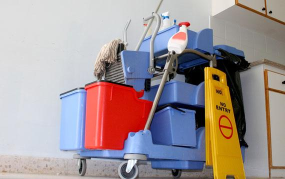
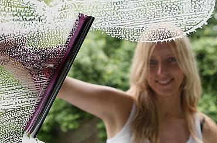
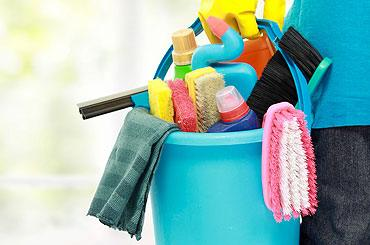
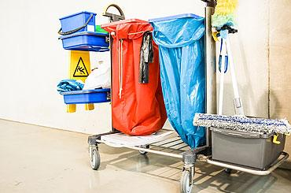

La sciadel pulito
Per ogni vostra esigenza di pulito: uffici, condomini, vetri, sanificazione.
Professionalità e impegno
Impresa di pulizie con sede a Costasavina di Pergine Valsugana, al lavoro in tutta la provincia di Trento con uno staff affiatato e attrezzature professionali per la pulizia industriale e domestica.
Servizi puntuali e fatti bene, nel rispetto del cliente: un lavoro che si vede, in ogni dettaglio.

I nostri servizi
Per ogni esigenza di pulito, in azienda, in condominio e a casa. Toccate un servizio per sapere di più.

Lavaggio vetri e vetrine
Vetri e vetrine brillanti, ovunque: nei negozi, negli uffici e nei giri scale.
Pulizia di uffici
Si passano ore ogni giorno sul posto di lavoro: l'ufficio deve essere pulito e accogliente.

Pulizia condomini
Rientrare a casa e sentire profumo di pulito, con le superfici che brillano.
Sanificazione
Ambienti sicuri e sani, a casa, in ufficio e anche in auto, in tutta la provincia.

Pulizia di stabili
Scuole, strutture commerciali e altro ancora, puliti e belli nel tempo.
Attenzione ai particolari
Non è un servizio in più: è quello che mettiamo in ogni lavoro.
Rapidi ed efficienti
«Ho scelto il nome Flash Pulizie per dare l'idea di una scia pulente, rapida e persistente.» Il pulito che resta, fino all'intervento successivo.
Paolo Sico, titolare
Dove lavoriamo
La sede è a Costasavina, frazione di Pergine Valsugana. Lavoriamo in tutta la provincia di Trento, puntuali ovunque abbiate bisogno di noi.
Preventivo gratuito, senza impegno
Diteci cosa c'è da pulire e dove: vi ricontattiamo al più presto con un preventivo su misura.